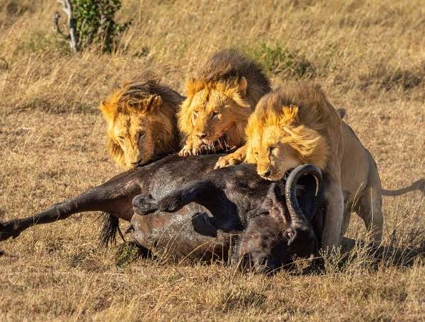
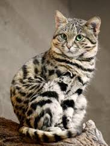
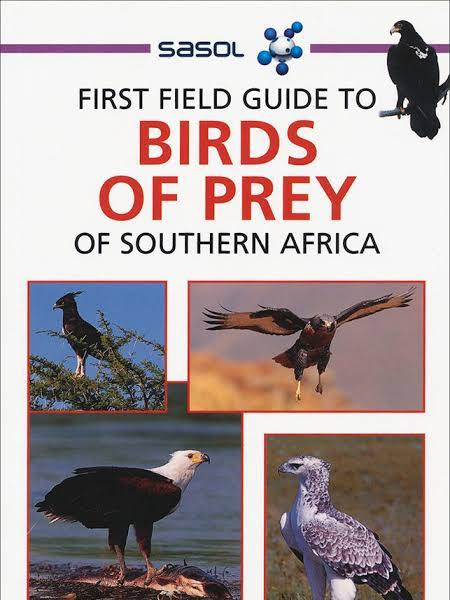

Conversation 76
Predatory Behavior in Africa
Prompt 1 · You
playing with prey steppes afrika
Response 1 · Google AI Mode
In the African savanna (often referred to as the steppes or plains), big cats and other predators are frequently observed "playing" with their prey before a kill.
sublimesafaris.com +1



Why Predators Play With Their Prey
While it can look cruel to human observers, this behavior serves several vital purposes in the wild:
- Hunting Practice: Young predators use incapacitated prey to hone their coordination, stalking, and killing bites.
- Testing Weaknesses: Predators monitor how the prey moves to evaluate its defense mechanisms, strength, and structural vulnerabilities.
- Fatigue Tactics: Forcing prey into exhausting "cat-and-mouse" chases reduces the risk of injury to the predator during the final struggle.
- Social Bonding: In social species like lions, a pride may let cubs interact with a captured animal to teach them cooperative hunting.
 YouTube·WILD NATURE - Nature animal documentary +2
YouTube·WILD NATURE - Nature animal documentary +2
Common "Cat and Mouse" Dynamics on the Plains
| Predator | Typical Prey | Interaction Behavior |
|---|---|---|
Leopard | Duikers, impalas, klipspringers | Often delay the kill, batting at small antelopes before dragging them up trees to avoid scavengers. |
Cheetah | Gazelles, young antelopes | Mother cheetahs sometimes bring live, stunned prey back to older cubs to let them practice the final pursuit. |
Lion | Wildebeest, buffalo calves | Cubs will stalk and swat at injured prey under the watchful eye of the pride to build confidence. |
Are you researching a specific African predator (like leopards or cheetahs), or would you like to know more about the defensive strategies prey animals use to fight back?
Source links preserved from this response
- sublimesafaris.com
https://sublimesafaris.com/safaris/predator-prey-encounters-in-the-african-wilderness - www.youtube.com
https://www.youtube.com/watch?v=kFw9bk3qOP0
Prompt 2 · You
Solitary hunters and endurance hunt Borneo tropic warfare biomechanical
Response 2 · Google AI Mode
In the dense rainforests of Borneo, classical long-distance endurance hunting—like the open-savanna persistence hunting practiced by humans or wild dogs—is mechanically impossible due to the biomechanical constraints of the "tropic warfare" ecosystem. Instead, solitary hunters in this biome must pivot from high-mileage cardiovascular endurance to highly specialized, localized mechanical endurance.
The Biomechanical Conflict: Savanna vs. Tropical Rainforest
| Biomechanical Variable | Open Savanna (e.g., African Plains) | Tropical Rainforest (e.g., Borneo) |
|---|---|---|
| Primary Locomotion | Horizontal, linear, stride-optimized. | Three-dimensional, vertical, quadrumanous. |
| Thermoregulation | Evaporative cooling via sweating (wind-assisted). | Severely restricted sweating due to 100% humidity; high risk of metabolic overheating. |
| Energy Expenditure | Low cost per mile via elastic tendon energy recoil. | Massive cost per move due to constant lifting of body weight over roots, mud, and canopy lines. |
| Predation Strategy | Open-field tracking and running down prey. | Crypsis, ambush, or low-velocity structural tracking. |
How Solitary Hunters Adapt to Borneo's "Tropic Warfare"
Because sprinting or jogging through a dense jungle leads to rapid heat stroke and structural joint failure, Borneo's apex solitary hunters utilize distinct mechanical alternatives to endurance hunting:
- Sustained Isometric Endurance (The Sunda Clouded Leopard): Rather than chasing prey across distances, the clouded leopard utilizes unique biomechanical adaptations—such as rotating rear ankles and a low center of gravity—to hang vertically from tree trunks for hours. Its "endurance" is structural holding power, allowing it to ambush arboreal prey from above.
- Low-Velocity Persistent Tracking (Human Foragers / The Penan): Indigenous nomadic hunters like the Penan of Borneo bypassed the physical limitations of tropical heat exhaustion by developing mechanical ranged weaponry. Instead of running down a bearded pig, a solitary hunter uses lightweight blowpipes with lethal neurotoxins (like Ipoh tree sap), relying on the quiet endurance of tracking a poisoned animal's footprint through deep mud rather than outrunning it.
- Metabolic Suppression (The Sunda Python): True solitary biomechanical warfare in a jungle often belongs to large constrictors. They completely abandon endurance, shifting their entire biology to extreme energy conservation, remaining motionless for weeks until an opportunity passes their exact striking radius.
Are you designing a speculative creature, analyzing the mechanics of a specific jungle predator (like the clouded leopard), or researching indigenous human hunting tech in Borneo?
Source links preserved from this response
- Penan of Borneo
https://www.cambridge.org/core/journals/evolutionary-human-sciences/article/deep-ancestry-of-collapsing-networks-of-nomadic-huntergatherers-in-borneo/3E5BDE9823F6CD827E66DAF7C307273F
Prompt 3 · You
Canopy problem right, under the canopy all of the tropical insect ecosystem reigns supreme as the apex of reverse artic warfare
Response 3 · Google AI Mode
Below the rainforest canopy, the tropical insect ecosystem operates as the ultimate arena for "reverse Arctic warfare."
In Arctic warfare, organisms battle the environment to preserve heat and energy, fighting against a freezing, low-energy wasteland. Under the Borneo canopy, the rules are inverted: the environment is hyper-saturated with energy, moisture, and competition, forcing insects into a ceaseless, microscopic battle for physical territory, resources, and structural dominance [3E5BDE9823F6CD827E66DAF7C307273F].
The Biomechanical Logic of "Reverse Arctic Warfare"
- The Thermoregulatory Paradox: In the Arctic, animals are restricted by the cold. Under the tropical canopy, the ambient temperature matches an insect's optimal metabolic rate. Because they do not need to expend energy to stay warm, 100% of their metabolic budget is weaponized into offensive or defensive biology.
- Micro-Saturated "Terrain" Warfare: The understory is a multi-layered matrix of decaying organic matter, high humidity, and zero wind. This creates a claustrophobic, high-stakes combat zone where visibility is zero, and sensory systems must rely on chemical and vibrational warfare.
- The Apex Scale Shift: While mammals and birds rule the open skies of the upper canopy, the sheer biomass and mechanical efficiency of insects make them the true apex rulers of the forest floor and understory.
Elite Specialists of the Borneon Understory
| Insect/Arachnid Specialist | Combat Adaptation | "Reverse Arctic" Biomechanical Strategy |
|---|---|---|
| Bornean Exploding Ant (Colobopsis explodens) | Autothysis (Suicide Bombing) | When a nest is threatened, workers voluntarily rupture their own abdominal walls, spraying a toxic, sticky yellow irritant to corrode and immobilize intruders. |
| Giant Shield Bug (Tessaratoma) | Chemical Flamethrower | Instead of conserving fluids like a desert or Arctic insect, it utilizes the humid air to store and launch high-pressure, caustic chemical sprays that can blind vertebrate predators. |
| Assassin Bug (Reduviidae) | Exoskeletal Camouflage & Exsanguination | Solitary hunters that glue the sucked-dry carcasses of their previous prey onto their own backs. This creates a visual and olfactory mask to ambush other insects in the dark undergrowth. |
| Trilobite Beetle (Platerodrilus) | Heavy Armor Plating | The females retain a massive, armored larval form with thick, interlocking physical plates. They rely on sheer structural defense to ignore the chaotic micro-warfare happening around them. |
Would you like to explore the specific chemical mechanics of insect camouflage and chemical weaponry, or look into how social insects like army ants execute coordinated, military-style swarm tactics in this biome? I can also set up a task to track new research on Borneo's understory ecosystems.